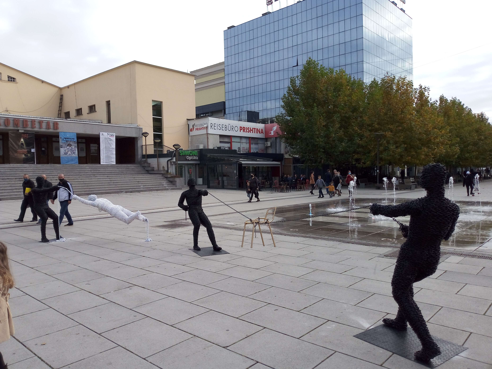

Prishtinë, Kosovo
Kosovo · Prishtinë
Prishtinë, the capital of Kosovo, is a city where history, culture and contemporary urban life come together. Its streets reflect a distinctive character shaped by different historical periods, while cafés, cultural spaces and everyday city life give it a lively and welcoming atmosphere. From its architectural landmarks to its vibrant public spaces, Prishtinë offers a glimpse into a city that continues to define its own identity. The city is also an important centre of cultural activity, with galleries, museums and public spaces that reflect the experiences and aspirations of its people. Walking through its neighbourhoods reveals a mixture of traditional influences and modern development, creating an atmosphere that is both distinctive and constantly evolving. These photographs capture my personal impressions and memories of exploring the capital of Kosovo.
My Photo Gallery
Explore my personal travel photographs and memories from Prishtinë.
View All Photos ↗